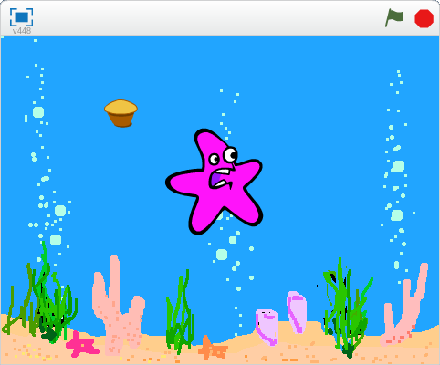
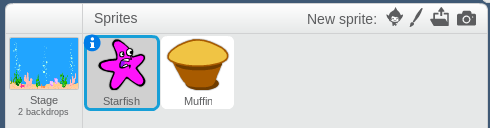
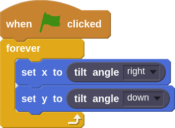
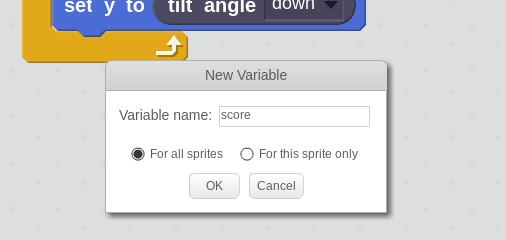
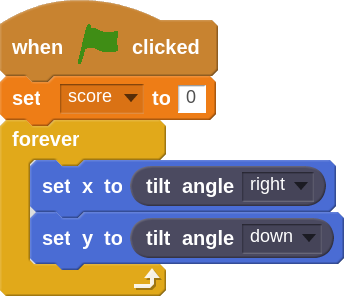
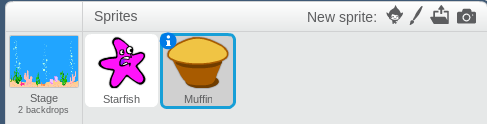
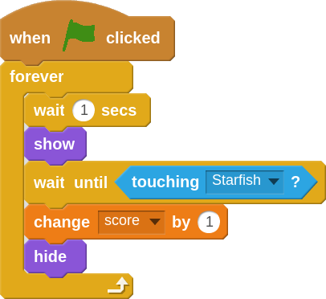
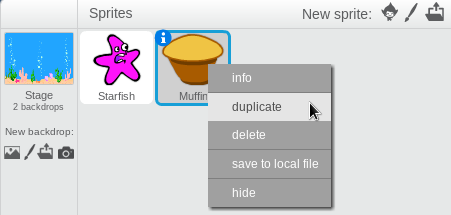
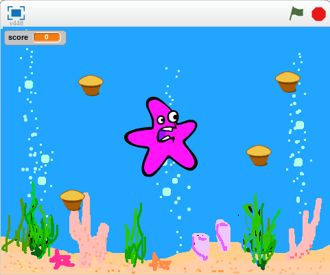

My game will feature a starfish that will move around underwater collecting muffins.

Go to the Data tab and click the Make a Variable button. In programming, we use variables to store information. In this example, the variable will be storing our score. Let's name our variable "score".





